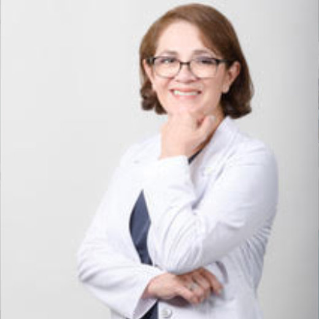
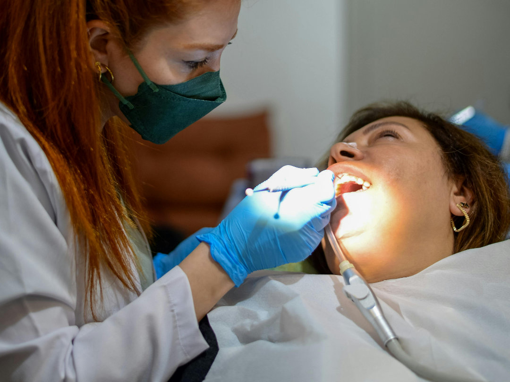
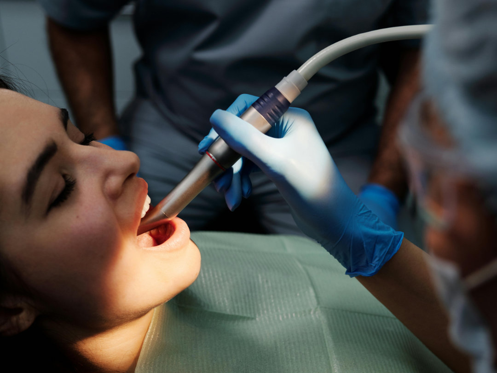
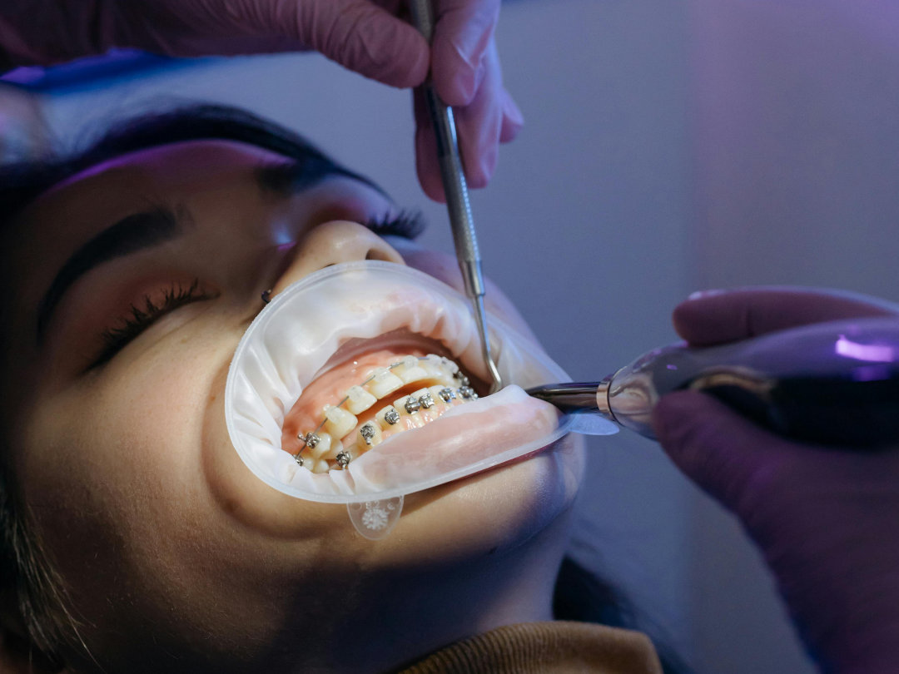
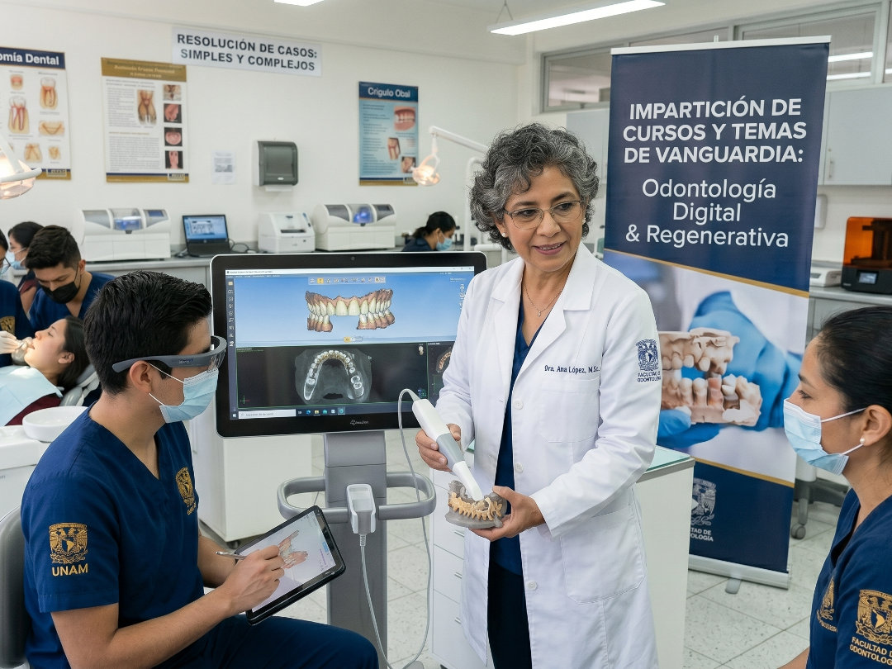

Cerrar


ComencemosLa M. en C. Alma Laura Baires Varguez realizó su formación integral en la Facultad de Odontología de la UNAM, obteniendo el título de Licenciatura, la Especialidad en Docencia orientada en Endodoncia y su Maestría en Ciencias Odontológicas.

Ofrecer servicios dentales integrales respaldados por el rigor académico, la innovación y la práctica clínica de alto nivel. Nos dedicamos a transformar la salud bucal a través de una odontología basada en la evidencia, aplicando siempre los mejores estándares de cuidado.




Accede a mi comunidad privada en Patreon donde comparto material exclusivo, sesiones en vivo y acceso directo para resolver tus dudas.
Unirme a la comunidad